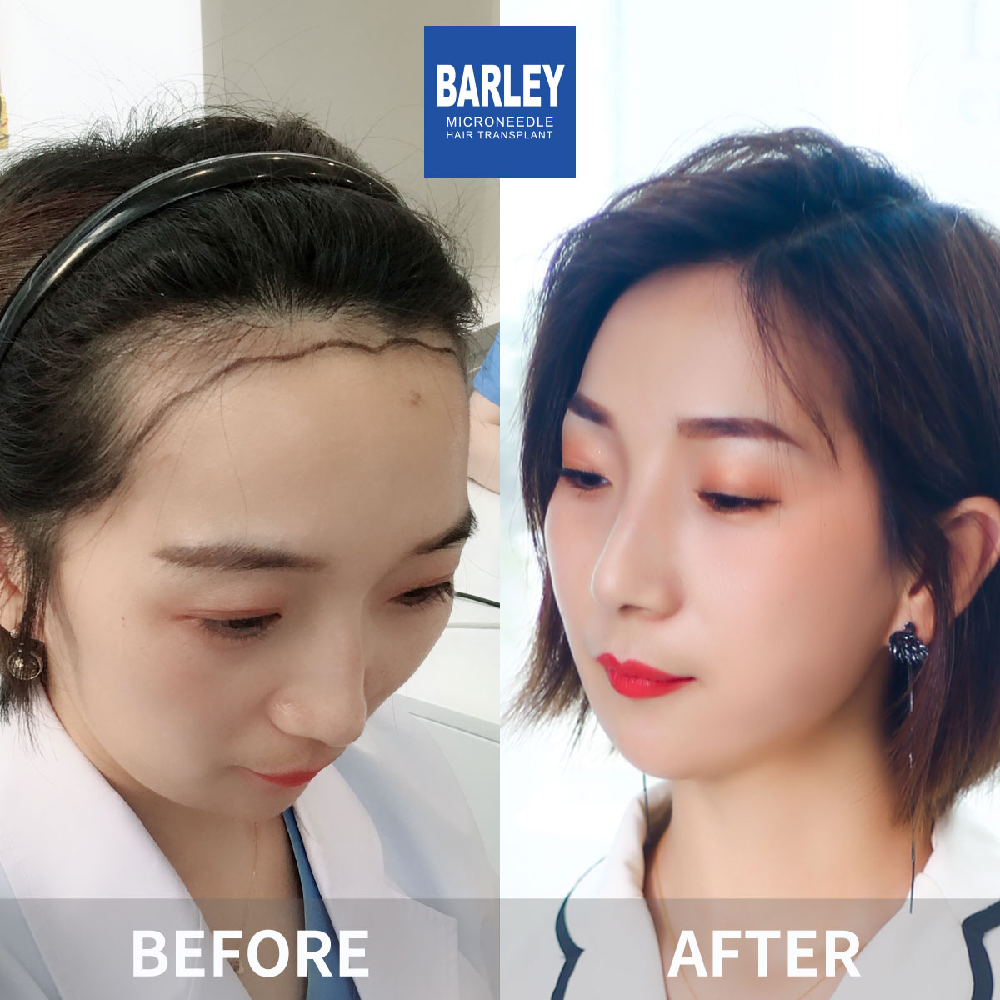
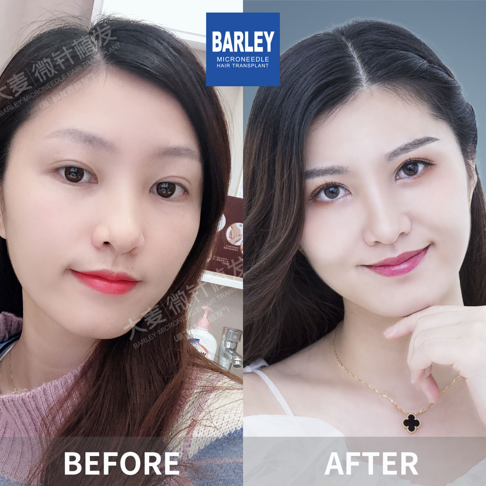
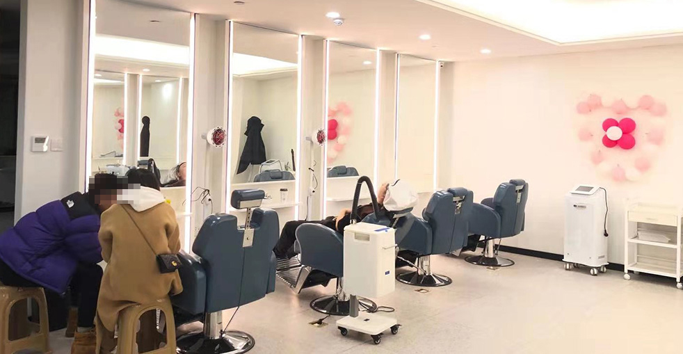

Our internationally recognized patented system for outstanding hair restoration results
During a microneedle hair transplant, each follicular unit is carefully loaded into the hollow tip of our proprietary implant pen and deposited straight into the pre-designed recipient zone. The pen's barrel rotates a full 360°, orienting every graft to follow your natural hair growth direction, which substantially cuts down on tissue damage, keeps post-operative soreness to a minimum, and virtually removes the danger of harming delicate follicles while they are being placed.
0.6–1.0mm needle gauge
Fast healing, little downtime
Resume daily activities promptly
20–30% more grafts per square centimeter
Aligns with natural hair growth direction
Personalized plans designed around your specific needs
Follicular Unit Extraction (FUE) stands as the gold standard in modern hair restoration. Single follicular units are individually removed from the donor area using specialized micro-punches, then inserted with our microneedle pen to yield authentic-looking results with virtually no detectable scarring.
Follicular Unit Transplantation (FUT) entails extracting a narrow band of donor skin, which is then meticulously divided into separate follicular units. Although FUE remains our go-to technique, FUT remains a viable alternative for individuals who need the maximum graft count achievable in a single session.
With our no-shave approach, you can undergo a full hair transplant without having your hair clipped short. Our specialists carefully harvest and insert follicles between your remaining longer strands, rendering the procedure virtually invisible to colleagues, acquaintances, and family members.
See how each method measures up across key performance indicators
| Feature | Microneedle FUE (Recommended) | Traditional FUE | FUT |
|---|---|---|---|
| Incision Size | 0.6–1.0mm ✓ | 1.0–1.5mm | Linear scar |
| Recovery Time | 1–2 days ✓ | 5–7 days | 7–14 days |
| Density | 20–30% higher ✓ | Standard | Standard |
| 360° Control | ✓ | ✗ | ✗ |
| Tissue Impact | ✓ Minimal | Moderate | Significant |
| First Hair Wash | 24 hours ✓ | 3–5 days | 7–10 days |
| Scarring | Virtually invisible ✓ | Minimal dot marks | Linear scar |
| Graft Survival Rate | 98%+ ✓ | 90–95% | 90–95% |
| Discomfort Level | Minimal ✓ | Low–Moderate | Moderate |
14 proprietary technologies born from years of dedicated engineering and clinical research

Our flagship pen device equipped with a full-circle rotating barrel that ensures precise directional matching when placing each graft.

Computer-driven follicle distribution logic that optimizes spacing for maximum density and the most lifelike growth appearance.

Proprietary tissue-holding mechanism that ensures steady, controlled, and gentle follicle removal throughout extraction.

Purpose-built instrument engineered for the careful removal of coarser facial hair follicles without damage.

Hand-crafted forceps engineered to grip follicles securely while avoiding any crush-related injury to the graft.

Fine-tuned depth adjustment that guarantees every graft sits at the optimal level beneath the skin surface.

A layered safeguarding protocol that shields grafts from physical stress at every phase of the operation.

Extra-slim blade array producing the smallest possible entry wounds for accelerated recovery and reduced soreness.

A delicate harvesting methodology that keeps each extracted follicle structurally whole and undamaged.

Coolant-managed holding environment that keeps follicles at peak vitality from the moment of harvest through to final placement.

Refined separation methodology that divides individual grafts cleanly without disturbing neighboring tissue structures.

Proprietary alignment technology that matches each graft's orientation to the unique growth angle of nearby hair.

Analytics-driven distribution framework that delivers the fullest visual impact while preserving adequate blood flow between grafts.

Evidence-based post-operative regimen developed to shorten healing duration and encourage strong, healthy graft establishment.
A thorough nine-phase roadmap toward restoring your natural head of hair
Your physician inspects your scalp, determines your degree of hair loss, and evaluates the follicle concentration in your donor area to confirm whether transplantation is the right path for you.
Your physician draws a bespoke hairline that complements your facial proportions, age group, and personal wishes. We chart every implantation zone and compute the exact graft count needed.
Standard blood work and coagulation tests are performed to eliminate any underlying health risks. Your wellbeing is always our foremost concern.
The donor and recipient zones are precisely anesthetized. You stay fully conscious and at ease, feeling zero pain throughout the entire procedure.
Single follicular units are delicately removed from the donor zone at the rear of your head using refined micro-punches that leave only the tiniest, nearly undetectable traces.
Our lab specialists thoroughly cleanse, organize, and preserve the collected follicles in a chilled nutrient bath to sustain peak viability right up until insertion.
Viable grafts are methodically placed one by one through our exclusive microneedle pen. The full 360° swivel ensures every graft follows the same trajectory as the surrounding natural hair.
Your scalp is softly cleaned and wrapped in a thin protective bandage. We make sure you feel at ease and walk you through detailed cleansing steps before you leave.
You receive comprehensive written directions covering washing routines, everyday activities, and what to expect as you heal. We schedule check-in visits to monitor your advancement at every milestone.
See the life-changing transformations our patients have undergone





Genuine snapshots of our delighted and successful patients

Posing alongside our clinical staff following a successful session

Celebrating outstanding outcomes together with our physicians

Yet another pleased patient sharing their happiness

Patient pictured with our specialist prior to going home

Content patient with Dr. Chen following the procedure

Enthusiastic patient displaying their refreshed appearance

Patient thrilled with the overall transformation

Patient embarking on a new journey with phenomenal outcomes
Genuine accounts shared by our pleased patients from around the world
"I'm a software engineer and I appreciate precision. The 360-degree rotating implant pen is brilliant engineering. Each graft is placed at the exact angle and direction of my natural hair growth. The result is indistinguishable from hair that was always there. The technical sophistication of this system is light-years ahead of manual forceps placement."
"I had a traditional FUE transplant in Turkey five years ago. The results were decent but I could see tiny dot scars if I looked closely. Barley's microneedle technique uses 0.6mm needles — half the size of what I had before. The incisions are so small they're virtually invisible. The density is also noticeably higher. I wish I'd known about this technology earlier."
"What impressed me most was the cold-chain graft preservation. From extraction to implantation, every follicle was kept at 4-8 degrees Celsius in a specialized nutrient solution. Most clinics don't bother with temperature control, yet it's critical for graft survival. My surgeon achieved 99% survival rate. The attention to scientific detail is evident in the results."
"I'm a dermatologist and I was skeptical about claims of 'superior technology.' But after reviewing Barley's 14 patents and published research, I was convinced. The microneedle implant pen is genuinely innovative — it creates the incision and places the graft in one motion, reducing handling time by 60%. Less handling means less trauma to the follicle. The science is sound."
"The no-shave option was essential for me. I'm a lawyer and couldn't afford to look like I'd had surgery. Barley's team extracted grafts through my existing hair using their specialized microneedle, and I walked out looking identical to how I walked in. Two weeks later, my clients had no idea. The discretion this technology provides is unmatched in the industry."
"I researched FUE, FUT, DHI, Sapphire FUE — every technique available. Barley's microneedle approach combines the best elements: the precision of implant pen placement, the 360-degree rotation for natural angle matching, and ultra-fine 0.6mm needles for minimal trauma. It's not just marketing; it's a genuinely integrated system. The results speak for themselves — natural, dense, and undetectable."
World-class facilities built to international medical standards

Where your transformation begins

Fully sterilized, precision-outfitted workspace
Private discussions with your surgeon

Unwind comfortably before heading home

Warm, polished, and inviting

Our comprehensive medical campus
Clear answers to common inquiries about our microneedle hair restoration approach
Tap any contact option to copy the information
15810155700
+86 13730143529
hairtransplant@qq.com